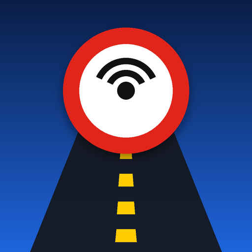

Sentinella
Navigatore con autovelox, tutor e costo del viaggio.
Navigazione con vocePercorsi con tappe, alternative e istruzioni in italiano.
5.000+ autovelox e i tutor ufficialiAvvisi in anticipo e velocità media nella tratta.
Costo reale del viaggioCarburante e pedaggi in base alla tua auto.
Usa l'app solo da fermo o con il telefono sul supporto. I cartelli stradali prevalgono sempre sui dati dell'app.